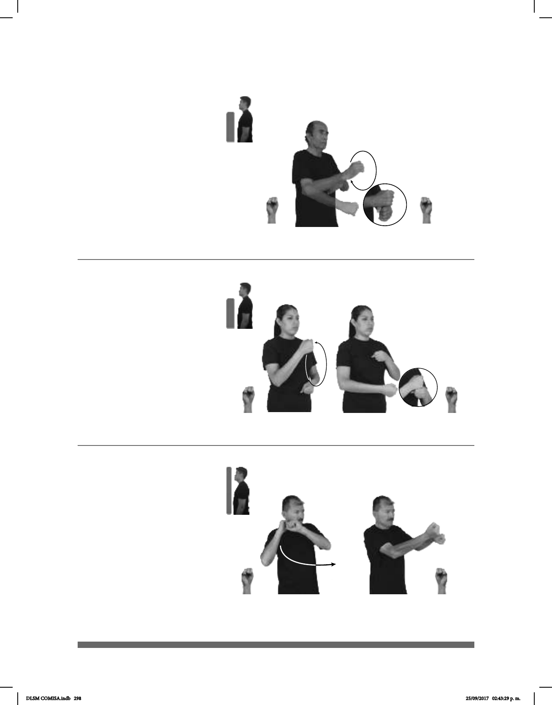

298
Seña: SC: I., II. y III. SB
I., II. y III. MD y MB S.1
I., II. y III. MD y MB
palmas hacia dentro.
I., II. y III. MD y MB a la
altura del pecho.
I. La MD golpea a la
MB en línea recta; II. La MD se mueve
formando un círculo hacia atrás alrededor
de la MB; III. La MD golpea a la MB en
línea recta.
sust. m. Período de doce
meses que ha ocurrido en un tiempo
anterior al presente.
Seña: SB
MD y MB S.1
MD la palma inicia hacia la
izquierda y termina hacia arriba. MB la palma
inicia oblicua hacia la derecha y hacia afuera y
termina hacia abajo.
Del hombro derecho al pecho. MD
sobre MB.
MD y MB los brazos se mueven
formando un arco mientras los antebrazos giran
y cambian la orientación de las manos.
Simula la acción de batear
una pelota.
sust. m. sing. Juego de pelota entre
dos equipos de nueve jugadores, en un campo
en forma de diamante con cuatro bases, que
consiste en recorrer las bases tras batear la
pelota.
Año pasado (S-14)
(S-15)
AÑO-PASADO UNIVERSIDAD pro-YO TERMINAR
El año pasado terminé la universidad.
pro-TÚ BÉISBOL JUGAR
Tú juegas béisbol.
Seña: SB
MD y MB S.1
MD palma hacia la
izquierda. MB palma hacia adentro.
MD y MB a la altura del
pecho.
La MD se mueve
formando un círculo hacia el frente
alrededor de la MB y después la MD
golpea a la MB en línea recta.
Año: sust. m. Período de
doce meses.
Año (S-13)
PRÓXIMO AÑO pro-YO VIAJAR EUROPA
El próximo año viajaré a Europa.
DLSM COMISA.indb 298 25/09/2017 02:43:29 p. m.